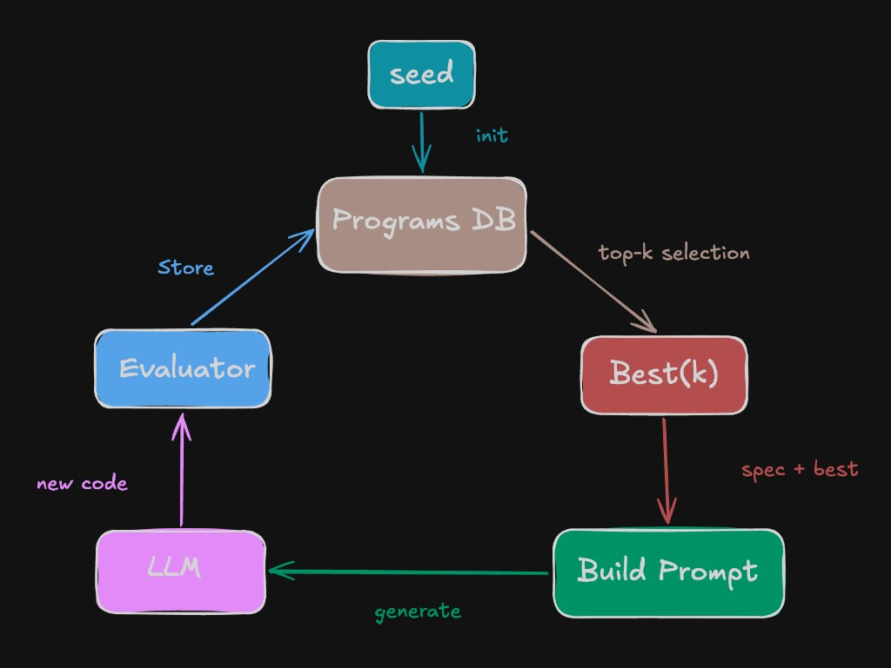

Code
import random
from litellm import completion
import litellm
from statistics import mean
from dataclasses import dataclass
from concurrent.futures import ThreadPoolExecutor
from IPython.display import display, Markdown

An LLM that can’t solve a problem alone — but give it a loop, a judge, and a population, and it discovers solutions nobody wrote.
I wanted to understand FunSearch (DeepMind, 2023) — not by reading about it, but by building it from zero. This post walks through every piece: what it is, why it works, and the experiments that made it click. All code runs on NVIDIA NIM (free tier) via litellm.
FunSearch is an evolutionary search over programs — not solutions. The key insight: instead of asking an LLM to solve a problem directly, you ask it to evolve a function that produces solutions. The function gets evaluated, scored, and the best versions are fed back to the LLM for improvement.
Think of it as a framework where we coerce the LLM to solve a problem just like leetcode — but instead of solving it in one shot, we let the LLM search and approximate the solution iteratively.
It has 4 parts:
| Component | Role |
|---|---|
| Sampler | Calls the LLM, gets back code |
| Evaluator | Runs code against tests, returns a score |
| Programs Database | Stores best programs, sorted by score |
| Prompt Builder | Shows best programs to LLM, asks for improvement |

The loop: seed → prompt LLM with best programs → evaluate new code → store → repeat.
Why “Fun”? It searches for functions.
import random
from litellm import completion
import litellm
from statistics import mean
from dataclasses import dataclass
from concurrent.futures import ThreadPoolExecutor
from IPython.display import display, Markdownmodel_name = "nvidia_nim/openai/gpt-oss-20b"
litellm.register_model({model_name: {
"max_tokens": 8192,
"input_cost_per_token": 0.0,
"output_cost_per_token": 0.0,
"supports_assistant_prefill": False,
}})The sampler’s job is simple: take a prompt, call the LLM, return clean code. It strips markdown fences if the LLM wraps its response. Think of it as the contestant on leetcode — it reads the problem and submits a solution. Temperature controls diversity — low (0.5) for a careful coder, high (1.2) for a wild one who tries unconventional approaches.
def sample_code(prompt: str, temperature: float = 0.8) -> str:
resp = completion(
model=model_name,
messages=[{"role": "user", "content": prompt}],
temperature=temperature,
)
text = resp.choices[0].message.content
if not text:
return ""
if "```" in text:
code = text.split("```")[1]
if code.startswith("python"):
code = code[len("python"):]
return code.strip()
return text.strip()The evaluator is the only source of truth — no vibes, just pass/fail. It takes a code string, runs it via exec(), then runs each test assertion. Pass = 1.0, fail/crash = -1.0. It is the impartial judge just like leetcode hidden test cases.
The key design choice: the evaluator must handle crashes gracefully. The LLM will write broken code — that’s fine, it just scores 0.
def evaluate(code_str, tests):
namespace = {}
try:
exec(code_str, namespace)
except Exception:
return [-1.0] * len(tests)
result = []
for test in tests:
try:
exec(test, namespace)
result.append(1.0)
except Exception:
result.append(-1.0)
return result# test it
code = 'def add(a, b): return a + b'
tests = [
"assert add(1, 2) == 3",
"assert add(1, -2) == -1",
"assert add(0, 0) == 0",
]
evaluate(code, tests)[1.0, 1.0, 1.0]Stores (code, score) pairs in a sorted list. db_add appends and re-sorts by score descending. best(k) returns top-k entries for prompting the LLM.
Think of it as the leaderboard — leetcode ranks submissions by runtime/score, and contestants study the top solutions to improve their next attempt. Same here: the LLM sees the best programs and tries to beat them.
@dataclass
class DB:
code: str
score: float
def __str__(self):
preview = self.code.strip().split('\n')[0]
return f"[score={self.score:.4f}] {preview}"
def display_code(self):
display(Markdown(f"**Score: {self.score:.4f}**\n```python\n{self.code}\n```"))Stitches together the task description + best programs with their scores. Only sends top 2-3 programs — more than that adds noise and eats context window.
def build_prompt(spec, best_programs):
examples = "\n\n".join(
f"# score: {p.score}\n{p.code}" for p in best_programs
)
return f"""Here's the task: {spec}
Here are the best solutions so far:
{examples}
Write an improved version. Return ONLY the function, no explanation."""Start simple — can FunSearch evolve a function that adds two numbers with error handling? A naive return a + b scores ~0.71 (fails on invalid types). A proper version with type checking scores 1.0.
This is like giving the LLM an easy leetcode problem — it should solve it quickly, which validates that our loop works before we throw harder problems at it.
spec = "write a function **add** that takes two arguments and returns their sum. If either argument is not a number, return None."
tests = [
"assert add(1, 2) == 3",
"assert add(1, -2) == -1",
"assert add(0, 0) == 0",
"assert add(-3, -7) == -10",
"assert add(1.5, 2.5) == 4.0",
"assert add(1, 'a') == None",
"assert add([], 2) == None",
]
seed = 'def add(a, b):\n return a + b'
lis = []
def db_add(code, score):
lis.append(DB(code=code, score=score))
lis.sort(key=lambda x: x.score, reverse=True)
def best(k): return lis[:k]
# seed the database
seed_score = mean(evaluate(seed, tests))
db_add(seed, seed_score)
print(f"Seed score: {seed_score:.4f}")
for i in range(10):
prompt = build_prompt(spec, best(2))
new_code = sample_code(prompt)
score = mean(evaluate(new_code, tests))
db_add(new_code, score)
print(f" iter {i}: score={score:.4f} best={best(1)[0].score:.4f}")
print(f"\n--- Best solution ---")
best(1)[0].display_code()Seed score: 0.4286
iter 0: score=1.0000 best=1.0000
iter 1: score=1.0000 best=1.0000
iter 2: score=1.0000 best=1.0000
iter 3: score=1.0000 best=1.0000
iter 4: score=1.0000 best=1.0000
iter 5: score=1.0000 best=1.0000
iter 6: score=1.0000 best=1.0000
iter 7: score=1.0000 best=1.0000
iter 8: score=1.0000 best=1.0000
iter 9: score=1.0000 best=1.0000
--- Best solution ---Score: 1.0000
def add(a, b):
if isinstance(a, (int, float)) and isinstance(b, (int, float)):
return a + b
return NoneWhat happens without a seed? The first best(2) returns an empty list, and the LLM has no examples to improve on — it’s just a cold one-shot.
Hypothesis: no seed → worse scores.
On the add problem below, both seeded and no-seed runs hit 1.0 — because add is too easy. The real difference shows up on harder problems like compression (in our experiments, no-seed compression runs scored significantly worse). The sweet spot is a seed that’s correct but mediocre — like seeing a brute-force solution on leetcode’s discussion page before attempting your own. It gives you a direction and room to improve. Too good, and you just copy it.
# experiment: no seed
lis = []
for i in range(10):
prompt = build_prompt(spec, best(2))
new_code = sample_code(prompt)
score = mean(evaluate(new_code, tests))
db_add(new_code, score)
print(f" iter {i}: score={score:.4f} best={best(1)[0].score:.4f}")
print(f"\nNo-seed best: {best(1)[0].score:.4f}") iter 0: score=1.0000 best=1.0000
iter 1: score=1.0000 best=1.0000
iter 2: score=1.0000 best=1.0000
iter 3: score=1.0000 best=1.0000
iter 4: score=1.0000 best=1.0000
iter 5: score=1.0000 best=1.0000
iter 6: score=1.0000 best=1.0000
iter 7: score=1.0000 best=1.0000
iter 8: score=1.0000 best=1.0000
iter 9: score=1.0000 best=1.0000
No-seed best: 1.0000The add problem is too easy — the LLM nails it in one shot, like a leetcode easy that every contestant solves. FunSearch shines on hard/unsolved problems where no one on the leaderboard has a perfect score yet.
String compression is a good fit: - Many valid strategies (run-length, dictionary, chunking) - Score = compression ratio (shorter output → higher score) - Must decompress back to original (correctness check) - No single “best” algorithm — depends on the input patterns
test_strings = [
"aaaaaabbbbbccccdddeef",
"the cat sat on the mat and the cat saw the bat",
"abcabcabcabcabcabc",
"aaaaaaaaaaaaaaaaaaaabbbbbbbbbbbbbbbbcccccccccc",
"xyxyxyxyxyxyxyxyxyxy",
"hello world hello world hello world",
"abcdefghijklmnopqrstuvwxyz",
"aaabbbcccaaabbbcccaaabbbccc",
]
def evaluate_compression(code_str):
namespace = {}
try:
exec(code_str, namespace)
except Exception:
return 0.0
if "compress" not in namespace or "decompress" not in namespace:
return 0.0
ratios = []
for s in test_strings:
try:
compressed = namespace["compress"](s)
decompressed = namespace["decompress"](compressed)
if decompressed != s:
ratios.append(0.0)
elif len(compressed) >= len(s):
ratios.append(0.0)
else:
ratios.append(1.0 - len(compressed) / len(s))
except Exception:
ratios.append(0.0)
return sum(ratios) / len(ratios)comp_spec = """Write two functions: `compress(s)` and `decompress(s)`.
- compress takes a string and returns a shorter string encoding
- decompress takes the compressed string and returns the original
- decompress(compress(s)) must equal s exactly
- goal: make the compressed output as short as possible
- do NOT use any imports or standard library compression"""
comp_seed = '''def compress(s):
out = []
i = 0
while i < len(s):
c = s[i]
count = 1
while i + count < len(s) and s[i + count] == c:
count += 1
if count > 1:
out.append(f"{count}{c}")
else:
out.append(c)
i += count
return "".join(out)
def decompress(s):
out = []
i = 0
while i < len(s):
if s[i].isdigit():
num = []
while i < len(s) and s[i].isdigit():
num.append(s[i])
i += 1
out.append(int("".join(num)) * s[i])
i += 1
else:
out.append(s[i])
i += 1
return "".join(out)'''
print(f"Seed compression score: {evaluate_compression(comp_seed):.4f}")Seed compression score: 0.2017lis = []
db_add(comp_seed, evaluate_compression(comp_seed))
for i in range(10):
prompt = build_prompt(comp_spec, best(2))
new_code = sample_code(prompt)
score = evaluate_compression(new_code)
db_add(new_code, score)
print(f" iter {i}: score={score:.4f} best={best(1)[0].score:.4f}")
print(f"\n--- Best compression solution ---")
best(1)[0].display_code() iter 0: score=0.0924 best=0.2017
iter 1: score=0.0924 best=0.2017
iter 2: score=0.0924 best=0.2017
iter 3: score=0.0924 best=0.2017
iter 4: score=0.0924 best=0.2017
iter 5: score=0.0870 best=0.2017
iter 6: score=0.0924 best=0.2017
iter 7: score=0.0000 best=0.2017
iter 8: score=0.0924 best=0.2017
iter 9: score=0.0924 best=0.2017
--- Best compression solution ---Score: 0.2017
def compress(s):
out = []
i = 0
while i < len(s):
c = s[i]
count = 1
while i + count < len(s) and s[i + count] == c:
count += 1
if count > 1:
out.append(f"{count}{c}")
else:
out.append(c)
i += count
return "".join(out)
def decompress(s):
out = []
i = 0
while i < len(s):
if s[i].isdigit():
num = []
while i < len(s) and s[i].isdigit():
num.append(s[i])
i += 1
out.append(int("".join(num)) * s[i])
i += 1
else:
out.append(s[i])
i += 1
return "".join(out)Run the loop long enough and you’ll notice: every solution starts looking the same. The LLM sees the same top programs every iteration and makes tiny variations of the same strategy. This is premature convergence.
The fix: islands.
Imagine if leetcode had separate leaderboards for different regions — contestants in each region evolve their own strategies independently. Occasionally, the top solution from one region gets shared with another. That’s islands.
Instead of one sorted list, maintain multiple separate populations (islands). Each island evolves independently. Different islands can discover different strategies:
The loop becomes: 1. Pick a random island 2. Get best(2) from that island 3. Prompt LLM → get new code → evaluate 4. Store the result back in the same island
Migration (every N iterations): copy the best program from one random island to another. Like sharing a top-ranked solution across regional leaderboards.
Island culling (every M iterations): wipe the worst-performing island and re-seed it. Like resetting a stagnant leaderboard to encourage fresh approaches.
from random import randint
class IslandDB:
def __init__(self, count=3, max_size=20):
self.count = count
self.max_size = max_size
self.islands = [[] for _ in range(count)]
def rand_idx(self):
return randint(0, self.count - 1)
def add(self, code, score, idx=None):
if idx is None:
idx = self.rand_idx()
self.islands[idx].append(DB(code=code, score=score))
self.islands[idx].sort(key=lambda x: x.score, reverse=True)
self.islands[idx] = self.islands[idx][:self.max_size]
def best(self, k, idx=None):
if idx is None:
idx = self.rand_idx()
return self.islands[idx][:k], idx
def migrate(self, src, dst):
programs, _ = self.best(1, idx=src)
if programs:
self.add(programs[0].code, score=programs[0].score, idx=dst)
def cull_worst(self, seed_code, seed_score):
worst = min(range(self.count),
key=lambda i: self.islands[i][0].score if self.islands[i] else float("-inf"))
self.islands[worst] = [DB(code=seed_code, score=seed_score)]
print(f" Culled island {worst}")
def summary(self):
for i in range(self.count):
if self.islands[i]:
print(f" Island {i}: best={self.islands[i][0].score:.4f} size={len(self.islands[i])}")
else:
print(f" Island {i}: empty")def sample_multiple(prompt, n=3, temperature=0.8):
with ThreadPoolExecutor(max_workers=n) as pool:
futures = [pool.submit(sample_code, prompt, temperature) for _ in range(n)]
return [f.result() for f in futures]Each island gets a different temperature: - Island 0 (temp 0.5) — conservative, refines what works - Island 1 (temp 0.8) — balanced - Island 2 (temp 1.2) — wild exploration
This is the exploration vs exploitation tradeoff — a core concept in search algorithms.
temps = {0: 0.5, 1: 0.8, 2: 1.2}
db = IslandDB(count=3)
seed_score = evaluate_compression(comp_seed)
for i in range(db.count):
db.add(comp_seed, seed_score, idx=i)
print(f"Seeded {db.count} islands with score {seed_score:.4f}\n")
for i in range(50):
best_programs, idx = db.best(2)
prompt = build_prompt(comp_spec, best_programs)
for new_code in sample_multiple(prompt, n=3, temperature=temps[idx]):
score = evaluate_compression(new_code)
db.add(new_code, score, idx=idx)
island_best = db.best(1, idx=idx)[0]
if island_best:
print(f" iter {i:2d}: island={idx} best={island_best[0].score:.4f}")
if i % 10 == 0 and i > 0:
src, dst = random.sample(range(db.count), 2)
db.migrate(src, dst)
if i % 30 == 0 and i > 0:
db.cull_worst(comp_seed, seed_score)
print(f"\n--- Final Results ---")
db.summary()
print(f"\n--- Best overall ---")
all_programs = [p for island in db.islands for p in island]
all_programs.sort(key=lambda x: x.score, reverse=True)
all_programs[0].display_code()Seeded 3 islands with score 0.2017
iter 0: island=2 best=0.2017
iter 1: island=0 best=0.2404
iter 2: island=0 best=0.2976
iter 3: island=0 best=0.3862
iter 4: island=0 best=0.3862
iter 5: island=0 best=0.3862
iter 6: island=2 best=0.3459
iter 7: island=1 best=0.3209
iter 8: island=0 best=0.3862
iter 9: island=2 best=0.3459
iter 10: island=2 best=0.3459
iter 11: island=0 best=0.4365
iter 12: island=0 best=0.4365
iter 13: island=2 best=0.3459
iter 14: island=2 best=0.3709
iter 15: island=0 best=0.4365
iter 16: island=0 best=0.4365
iter 17: island=2 best=0.3709
iter 18: island=2 best=0.3709
iter 19: island=2 best=0.3709
iter 20: island=1 best=0.3392
iter 21: island=1 best=0.3583
iter 22: island=0 best=0.4365
iter 23: island=1 best=0.3734
iter 24: island=0 best=0.4487
iter 25: island=1 best=0.4437
iter 26: island=2 best=0.3709
iter 27: island=0 best=0.4487
iter 28: island=1 best=0.4437
iter 29: island=1 best=0.4437
iter 30: island=2 best=0.3910
Culled island 2
iter 31: island=2 best=0.2017
iter 32: island=1 best=0.4558
iter 33: island=1 best=0.4558
iter 34: island=2 best=0.2017
iter 35: island=1 best=0.4558
iter 36: island=2 best=0.2017
iter 37: island=0 best=0.4487
iter 38: island=1 best=0.4831
iter 39: island=0 best=0.4487
iter 40: island=2 best=0.2017
iter 41: island=1 best=0.4831
iter 42: island=0 best=0.4487
iter 43: island=1 best=0.4831
iter 44: island=1 best=0.4831
iter 45: island=0 best=0.4514
iter 46: island=2 best=0.2017
iter 47: island=1 best=0.4831
iter 48: island=1 best=0.4831
iter 49: island=0 best=0.4514
--- Final Results ---
Island 0: best=0.4514 size=20
Island 1: best=0.4831 size=20
Island 2: best=0.2017 size=16
--- Best overall ---Score: 0.4831
def compress(s: str) -> str:
data = s.encode('latin1')
n = len(data)
i = 0
out_bytes = bytearray()
bit_buf = 0
bit_cnt = 0
def put_bit(b: int):
nonlocal bit_buf, bit_cnt
bit_buf |= (b & 1) << bit_cnt
bit_cnt += 1
if bit_cnt == 8:
out_bytes.append(bit_buf)
bit_buf = 0
bit_cnt = 0
def put_bits(v: int, k: int):
for _ in range(k):
put_bit(v & 1)
v >>= 1
WINDOW = 255
MAX_LEN = 16 # 4 bits for len-1
while i < n:
best_len = 0
best_off = 0
start = max(0, i - WINDOW)
j = i - 1
while j >= start:
l = 0
while l < MAX_LEN and i + l < n and data[j + l] == data[i + l]:
l += 1
if l > best_len:
best_len = l
best_off = i - j
if l == MAX_LEN:
break
j -= 1
if best_len >= 2:
put_bit(1) # reference flag
put_bits(best_off - 1, 8) # offset-1 in 8 bits
put_bits(best_len - 1, 4) # length-1 in 4 bits
i += best_len
else:
put_bit(0) # literal flag
put_bits(data[i], 8) # literal byte
i += 1
if bit_cnt:
out_bytes.append(bit_buf)
comp = out_bytes.decode('latin1')
return comp if len(comp) < len(s) else s
def decompress(s: str) -> str:
data = s.encode('latin1')
n = len(data)
byte_pos = 0
bit_pos = 0
def get_bit() -> int | None:
nonlocal byte_pos, bit_pos
if byte_pos >= n:
return None
b = (data[byte_pos] >> bit_pos) & 1
bit_pos += 1
if bit_pos == 8:
byte_pos += 1
bit_pos = 0
return b
def get_bits(k: int) -> int | None:
val = 0
for _ in range(k):
b = get_bit()
if b is None:
return None
val |= b << _
return val
out = bytearray()
while True:
flag = get_bit()
if flag is None:
break
if flag == 0:
v = get_bits(8)
if v is None:
break
out.append(v)
else:
off = get_bits(8)
if off is None:
break
l = get_bits(4)
if l is None:
break
off += 1
l += 1
start = len(out) - off
for _ in range(l):
out.append(out[start])
start += 1
return out.decode('latin1')FunSearch searches program space, not solution space. The LLM writes code that produces answers, not answers directly.
The evaluator is the only source of truth. No reward model, no RLHF — just deterministic code execution and a number.
Seed quality matters. Correct but mediocre is the sweet spot. Too good → LLM copies it. No seed → LLM flounders.
The LLM one-shots known problems. Knapsack? Solved in iteration 1. FunSearch only adds value when no textbook answer exists.
Islands prevent premature convergence. One list → everything looks the same after 10 iterations. Multiple islands → different strategies evolve in parallel.
Temperature per island = exploration vs exploitation. Conservative islands refine, wild islands discover.
Migration spreads good ideas. Culling kills dead ends. Together they keep the population healthy.